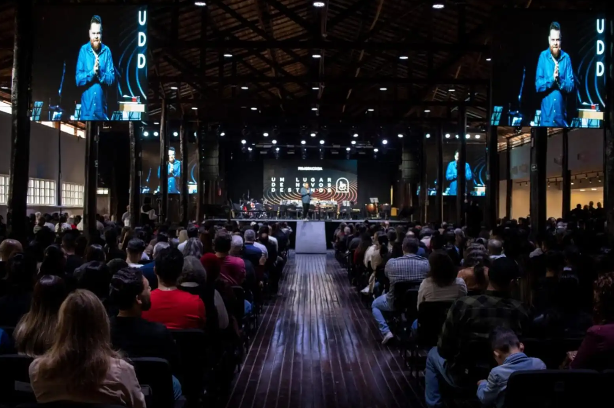

O NEBI é o braço de educação teológica da nossa igreja — um espaço sério, acessível e transformador para quem quer crescer no conhecimento das Escrituras e na fé batista.

O Núcleo de Ensino Bíblico nasceu do compromisso da Primeira Igreja Batista de Mogi das Cruzes com a formação sólida dos seus membros. Acreditamos que o conhecimento das Escrituras é o alicerce de uma fé madura, de famílias saudáveis e de uma comunidade que impacta.
Seis áreas de formação pensadas para atender diferentes momentos e necessidades da jornada de fé.
Do primeiro acesso à conclusão com certificado — um processo simples, claro e pensado para caber na sua rotina.
Oferecemos três formatos para garantir que a formação caiba na sua agenda — sem abrir mão da qualidade.
A Primeira Igreja Batista de Mogi das Cruzes tem décadas de história de fidelidade ao Evangelho nesta cidade. O NEBI nasceu do entendimento de que uma igreja forte precisa de membros formados — não apenas participantes de cultos, mas discípulos que conhecem, vivem e transmitem a fé.
"Que as palavras de Cristo habitem ricamente em vós, ensinando-vos e admoestando-vos uns aos outros."
Colossenses 3:16O NEBI é fruto desse compromisso: oferecer ensino sólido, acessível e contextualizado para a realidade dos nossos membros, com excelência e cuidado pastoral em cada etapa.
Vozes de quem passou pelo NEBI e voltou diferente.
Vagas limitadas por turma. Garanta seu lugar e comece sua jornada de formação bíblica na PIB Mogi.